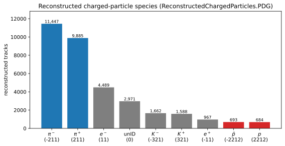
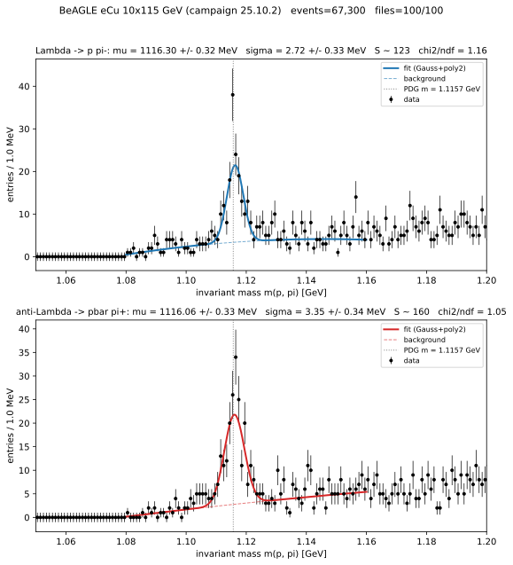

All in One View
Content from Generative AI as an agentic research tool
Last updated on 2026-11-10 | Edit this page
Overview
Questions
- How does an agentic assistant differ from a chat model?
- What are the parts of an LLM “harness”?
- How do we get trustworthy results from a stochastic model?
Objectives
- Trace one pass of the agent loop for a physics task, naming what enters the context at each step.
- Draft acceptance criteria precise enough that a grader — human or agent — can apply them.
- Tell a tool from a skill.
The bottleneck is rarely the physics
In a typical analysis the physics steps are few: select a final state, build an observable, fit a signal. Most of the time goes into the software around them: finding datasets, learning the data model, getting branch names and units right, and iterating on plotting and analysis code. LLMs can reduce this work, but only if their results can be checked. Later episodes apply this to the decay \(\Lambda^0 \to p\,\pi^-\).
Two modes of use
A chat completion is a single request: a prompt goes in, text comes out. If the text is code, you run it, read the error, and paste it back by hand. The model never observes your data or the result of running anything.
An agentic loop runs the same model inside a control structure that lets it act. The model proposes an action, an external tool carries it out, the result is added to the context, and the model is called again, until a stopping condition is met. The model then works from the actual state of your files and the output of real computations, not only from its training.
In this lesson “generative AI” means an LLM-based coding assistant used in this agentic mode. Machine learning for reconstruction or particle identification is not covered.
The agent loop
The model calls a tool, looks at what came back, and decides whether it is done.
%%{init: {'theme':'base', 'themeVariables': {'fontSize':'15px','lineColor':'#94a3b8','edgeLabelBackground':'#e2e8f0','clusterBkg':'#1f293720','clusterBorder':'#94a3b8','titleColor':'#94a3b8'}}}%%
flowchart TD
accTitle: {The agent loop}
accDescr: {The agent loop}
Q["task"]:::user --> M["model"]:::core
M -->|"tool call"| T["tools<br/>read files · run code · query "]:::tool
T -->|"result appended to context"| D{"task<br/>complete?"}:::core
D -->|"no"| M
D -->|"yes"| R["result + provenance"]:::out
classDef core fill:#e7efff,stroke:#4c6ef5,stroke-width:1.5px,color:#10204a;
classDef tool fill:#e6f7ed,stroke:#2f9e44,stroke-width:1.5px,color:#0b3d1f;
classDef out fill:#f3e8ff,stroke:#7048e8,stroke-width:1.5px,color:#2e1065;
classDef user fill:#f1f3f5,stroke:#868e96,stroke-width:1.5px,color:#212529;The model together with the software that runs this cycle is called a harness. It has four parts:
- Model: reasoning and code generation. The provider and model can be swapped; they are not part of the method.
- Context: everything the model sees in a step: instructions, files, earlier turns, tool outputs. Its size is limited (the context window).
- Tools: operations the model may call. Tools are the only way the model can change anything outside itself.
- Control loop: repeats propose → execute → observe until the task is done. This is what separates an agent from a chatbot.
Extending the harness
Current assistants add a few standard extension points to this core.
%%{init: {'theme':'base', 'themeVariables': {'fontSize':'15px','lineColor':'#94a3b8','edgeLabelBackground':'#e2e8f0','clusterBkg':'#1f293720','clusterBorder':'#94a3b8','titleColor':'#94a3b8'}}}%%
flowchart TB
accTitle: {AI agent harness}
accDescr: {AI agent harness}
MCP["MCP servers<br/>external tools & data"]:::tool --> H
SUB["subagents<br/>specialized, isolated context"]:::tool --> H
HOOKS["hooks<br/>lifecycle automation"]:::tool --> H
MON["monitors<br/>watch & react"]:::tool --> H
H(["harness core<br/>model + context + tools + loop"]):::core
classDef core fill:#e7efff,stroke:#4c6ef5,stroke-width:1.5px,color:#10204a;
classDef tool fill:#e6f7ed,stroke:#2f9e44,stroke-width:1.5px,color:#0b3d1f;This lesson uses two ways to extend a harness: * MCP
servers: tools in a standard form that works with any
assistant. This is how the assistant gets physics tools (Episode 3). * Skills:
versioned procedures (a SKILL.md) loaded when a
request matches (Episode 4). A tool is a
capability; a skill is a recipe.
Assistants also offer subagents (a separate assistant for a sub-task), hooks (scripts run at fixed moments, e.g. after every edit), and monitors (watch a background job).
The verification loop
An agent stops when it decides the task is complete. An LLM is stochastic: the same prompt can give different outputs, and a confident answer is not evidence of a correct one. A second loop around the first handles this. A grader checks the agent’s result against explicit acceptance criteria, and a failure goes back to the agent as feedback for another attempt.
%%{init: {'theme':'base', 'themeVariables': {'fontSize':'15px','lineColor':'#94a3b8','edgeLabelBackground':'#e2e8f0','clusterBkg':'#1f293720','clusterBorder':'#94a3b8','titleColor':'#94a3b8'}}}%%
flowchart TD
accTitle: {The verification loop}
accDescr: {The verification loop}
A["agent loop"]:::core -->|"draft result"| G["grader<br/>explicit success criteria"]:::tool
G --> P{"pass?"}:::core
P -->|"no — feedback into context"| A
P -->|"yes"| R["accepted result"]:::out
classDef core fill:#e7efff,stroke:#4c6ef5,stroke-width:1.5px,color:#10204a;
classDef tool fill:#e6f7ed,stroke:#2f9e44,stroke-width:1.5px,color:#0b3d1f;
classDef out fill:#f3e8ff,stroke:#7048e8,stroke-width:1.5px,color:#2e1065;Treat every model output as a hypothesis and accept it only after checking it against something external: the data, a fit statistic, a known physical value, or an independent implementation. Prefer tools that return small quantities you can inspect (counts, bin edges, fit parameters), and keep a record of what was run.
Exercise: acceptance criteria (≈ 5 min)
An assistant reports “the Λ⁰ peak was fitted successfully”. Write three or four checks the fit must pass before you accept it. Each must be a comparison a script could evaluate.
- \(|\mu - 1.115683\,\mathrm{GeV}| < 5\,\mathrm{MeV}\).
- \(\sigma\) of a few MeV, the detector resolution.
- \(\chi^2/\mathrm{ndf}\) of order 1.
- Enough entries in the fit window for the fit to mean anything.
“The fit looks good” is not a criterion. In Episode 4 these checks go into the lambda-fit skill; an agent that fails them must report the failure instead of a result.
Outer loops
Two more loops can wrap these. In an operation loop
an event (a schedule, a finished production job, a new pull request)
starts the agent and its verified output updates a report or a
documentation page; Episode 6
shows ePIC examples. In an improvement loop you read
what the agent actually did and change the harness: clarify
AGENTS.md, tighten a skill’s success criteria, add a
missing tool.
A person decides at each level: approving a sensitive tool call, signing off a graded result, reviewing what runs unattended, and choosing which harness changes to keep.
- An agentic assistant runs tools and reads their output; a chat model only returns text.
- Treat every result as a hypothesis and check it against explicit criteria before you accept it.
- A tool is a capability; a skill is a recipe.
The loop schematics are adapted from The Art of Loop Engineering.
Content from The measurement: Λ⁰ → p π⁻
Last updated on 2026-11-10 | Edit this page
Overview
Questions
- What is the p π⁻ invariant-mass observable, and its peak and background?
- Which EDM4eic collections and units does it need?
Objectives
- Write m(p, π) in terms of the four branches and the PDG masses.
- State the expected peak position, width scale, and background shape before looking at data.
The observable
The Λ⁰ decays weakly to p π⁻ (branching fraction ≈ 63.9%, cτ ≈ 7.9 cm). It is neutral, so we reconstruct it from its charged daughters. Assign the proton mass to one track and the pion mass to the other, using the reconstructed particle ID:
\[E_i = \sqrt{|\vec{p}_i|^2 + m_i^2}, \qquad m(p, \pi) = \sqrt{(E_1 + E_2)^2 - |\vec{p}_1 + \vec{p}_2|^2}\]
True Λ⁰ decays accumulate in a peak at 1.115683 GeV. Its width, a few MeV, is the detector resolution; the natural width is negligible. Random proton–pion pairs form a smooth combinatorial background under the peak, so the yield comes from a fit: a Gaussian on a second-order polynomial (Episode 5). The charge-conjugate mode Λ̄ → p̄ π⁺ is reconstructed the same way.
| Quantity | Value |
|---|---|
| m(Λ⁰) | 1.115683 GeV |
| m(p) | 0.9382720813 GeV |
| m(π±) | 0.13957061 GeV |
The data model
ePIC reconstruction output uses EDM4eic. A file
contains an events tree; each entry is one event, each
branch a collection. We need one collection and four
members:
events (tree; one entry per event)
ReconstructedChargedParticles.PDG reconstructed particle-ID hypothesis
ReconstructedChargedParticles.momentum.x p_x [GeV]
ReconstructedChargedParticles.momentum.y p_y [GeV]
ReconstructedChargedParticles.momentum.z p_z [GeV]Select protons (2212) and π⁻ (-211) for Λ⁰,
antiprotons (-2212) and π⁺ (211) for Λ̄.
You do not download a file. In Episode
3 the assistant uses the rucio
tools to find a DIS dataset and xrootd
to verify its files, then reads one of the dataset’s
root:// URLs
(e.g. root://epicxrd1.sdcc.bnl.gov:1095//...) in
place with the uproot
tools. It reads these branches without you writing any I/O code.
- The Λ⁰ shows up as a peak at 1.1157 GeV in the proton–pion invariant mass.
- The peak width comes from detector resolution.
Content from Tool servers and the Model Context Protocol (MCP)
Last updated on 2026-11-10 | Edit this page
Overview
Questions
- What is MCP, and what problem does it solve?
- What can the EIC tool servers do?
- How do you connect an assistant to them?
Objectives
- Start the servers, check them, and read a server log when something
fails
(
eic-mcp up/status/logs). - Generate the connection file for your own client with
eic-mcp config. - Discover a real DIS dataset by prompting, without hard-coding names or paths.
- Judge which returned quantities are worth verifying, and against what.
One interface for tools
Tools are the only way an assistant can act (Episode 1). The Model Context Protocol (MCP) defines a standard interface for them: write a tool once as a server, and any client (assistant) that supports MCP can use it.
%%{init: {'theme':'base', 'themeVariables': {'fontSize':'15px','lineColor':'#94a3b8','edgeLabelBackground':'#e2e8f0','clusterBkg':'#1f293720','clusterBorder':'#94a3b8','titleColor':'#94a3b8'}}}%%
flowchart LR
accTitle: {EIC MCP data tools}
accDescr: {EIC MCP data tools}
A["AI assistant<br/>opencode · Copilot · Cursor"]:::core <-->|"MCP"| S["uproot tool server<br/>(MCP, in eic-shell)"]:::tool
S <-->|"uproot"| F["EDM4eic ROOT file"]:::data
classDef core fill:#e7efff,stroke:#4c6ef5,stroke-width:1.5px,color:#10204a;
classDef tool fill:#e6f7ed,stroke:#2f9e44,stroke-width:1.5px,color:#0b3d1f;
classDef data fill:#fff4e0,stroke:#f08c00,stroke-width:1.5px,color:#5c3b00;This lesson uses three servers. They run inside eic-shell, and the assistant talks to them over a local web address.
%%{init: {'theme':'base', 'themeVariables': {'fontSize':'15px','lineColor':'#94a3b8','edgeLabelBackground':'#e2e8f0','clusterBkg':'#1f293720','clusterBorder':'#94a3b8','titleColor':'#94a3b8'}}}%%
flowchart LR
accTitle: {EIC MCP data tools}
accDescr: {EIC MCP data tools}
R["rucio-mcp<br/>find the dataset"]:::tool -->|"file locations"| X["xrootd-mcp<br/>check the files"]:::tool
X -->|"checked files"| U["uproot-mcp<br/>analyze in place"]:::core
classDef tool fill:#e6f7ed,stroke:#2f9e44,stroke-width:1.5px,color:#0b3d1f;
classDef core fill:#e7efff,stroke:#4c6ef5,stroke-width:1.5px,color:#10204a;-
rucio-mcpsearches the data catalog: it finds a dataset by name, lists its files, and gives theirroot://locations. -
xrootd-mcpbrowses the data store and checks that the files exist. -
uproot-mcpreads aroot://file in place. It can list a file’s contents, compute statistics and histograms, and run short NumPy calculations over one file or a whole dataset. It returns small summaries (counts, bin edges, statistics) that you can check, not raw data. The calculations run in a sandbox that cannot install software or write files.
Start the servers and connect
You did this once on the Setup page. Inside eic-shell, in your analysis directory:
BASH
$ eic-mcp up # start uproot, xrootd, rucio
$ eic-mcp status # which are running; `eic-mcp logs uproot` shows a server's log
$ eic-mcp config opencode # write opencode.jsonc in this directory
$ opencodeIn the session, /mcp lists the connected servers and
their tools. Other clients use the same URLs:
eic-mcp config claude (or copilot,
vscode, cursor, codex) writes the
file where that client reads it.
List the available campaigns
ePIC data is organized by production campaign, a
version such as 26.06.0. The campaign, the beam/target, and
the physics process are all part of the rucio DID
(e.g. epic:/RECO/26.06.0/epic_craterlake/DIS/pythia8.316-1.0/NC/noRad/ep/18x275/...).
Before locating a specific dataset, check which campaigns exist so you
use a current one:
Using the rucio tools, find which production campaigns are available (the version field in the DIDs, e.g. 26.06.0) and show the most recent few.Watch how the assistant does this: the catalog holds thousands of datasets in no particular order, so looking at only the first page of results can miss the newest campaigns.
Exercise: locate a dataset (≈ 10 min)
Ask your assistant:
Use the rucio tools to find the ePIC reconstructed-DIS dataset for the BeAGLE eCu ep 10x115 GeV sample in campaign 26.04.1. Report its DID and its number of files, give me the root:// URLs of its first three files, and confirm with the xrootd tools that those three exist.The dataset is
epic:/RECO/26.04.1/epic_craterlake/DIS/BeAGLE1.03.02-1.0/eCu/ep/10x115/q2_1to1000,
with 374 files. A file’s URL is
root://epicxrd1.sdcc.bnl.gov:1095//eic/EPIC followed by its
rucio name (/RECO/…); list_file_replicas
returns the same URL.
Inspect the dataset
Take one of the root:// URLs from the previous exercise
(written below as root://epicxrd1.sdcc.bnl.gov:1095//…) and
analyze it in place.
Exercise: check the schema (≈ 5 min)
Issue the request:
Using the uproot tools, report the schema of the events in dataset in root://epicxrd1.sdcc.bnl.gov:1095//<your-discovered-file>.root and list the members of the ReconstructedChargedParticles collection.The assistant reads the structure of the events tree and
reports something like:
OUTPUT
File: root://epicxrd1.sdcc.bnl.gov:1095//…/<dataset-file>.root
Tree: events — branches grouped by collection
ReconstructedChargedParticles collection:
ReconstructedChargedParticles.PDG int32[] PDG particle-ID code
ReconstructedChargedParticles.momentum.x float[] p_x [GeV]
ReconstructedChargedParticles.momentum.y float[] p_y [GeV]
ReconstructedChargedParticles.momentum.z float[] p_z [GeV]
… energy, charge, mass, type, referencePoint.*, covMatrix.*The names are read from the file, not guessed, so the assistant cannot invent branch names.
Exercise: identify the species present (≈ 5 min)
Issue the request:
Using the uproot tool execute_kernel on the same file, count the ReconstructedChargedParticles per PDG code (np.unique with return_counts; no import, np and ak are predefined) and show a table of species, count and fraction.The assistant makes a histogram with one bin per PDG code. A reconstructed-DIS file gives, for example:
OUTPUT
PDG species count
-211 pi- 11447
211 pi+ 9885
11 e- 4489
0 unID 2971 <- tracks with no PID hypothesis
-321 K- 1662
321 K+ 1588
-11 e+ 967
-2212 pbar 693
2212 p 684 <- protons are rare
Pions dominate; protons are rare (≈ 2%), so the Λ⁰ signal will be small. A sizeable fraction of tracks have no PID (code 0) or a wrong one. This misidentification adds to the combinatorial background, which is why we fit the peak instead of counting it.
Exercise: a bare question (≈ 5 min)
The prompts above name the tool and the branches. Now ask without any of that, in a new session, and count the tool calls:
How many events are in the first file of the campaign 26.04.1 BeAGLE eCu ep 10x115 reconstructed-DIS dataset?1,223. In a test run with a small model this took 16 tool calls and 102 s: it never asked the catalog, walked the store directory by directory, and two calls failed. Note your own count; Episode 4 repeats the question.
Verify the returned quantities
Look at the returned numbers (bin edges, counts, statistics). Do the PDG peaks fall at physical codes, and are the proton and pion yields plausible? Episode 4 turns this into explicit success criteria.
The same Λ⁰ peak can be obtained without MCP, with ROOT RDataFrame,
TTreeReader, plain uproot, or the PODIO Frame API; scripts are in extras/.
The assistant can now query the data through tools whose output you
can check, but it has to be told how each time. The next episode writes
that down once, in AGENTS.md and a
skill.
If something fails
Shared cluster node: ports there are open to every
user. Skip eic-mcp up and eic-mcp config;
inside eic-shell, let the client start its own servers:
BASH
$ R=https://raw.githubusercontent.com/eic/tutorial-mcp/main/files/mcp-config/cluster
$ curl -fsSL -o opencode.jsonc $R/opencode.jsonc && opencode # opencode
$ curl -fsSL -o .mcp.json $R/claude.json && claude # Claude Code- MCP servers give an assistant tools; any MCP assistant can use them.
-
eic-mcp upstarts the servers in eic-shell andeic-mcp config opencodeconnects opencode.
Content from Persisting instructions: AGENTS.md and SKILL.md
Last updated on 2026-11-10 | Edit this page
Overview
Questions
- How do you give an assistant durable project context?
- AGENTS.md or SKILL.md: when to use each?
- What’s in a usable SKILL.md for the Λ⁰ fit?
Objectives
- Say what belongs in AGENTS.md and what in a SKILL.md.
- Install the lesson’s AGENTS.md and lambda-fit skill.
- Write a small SKILL.md with success criteria.
Two ways to make instructions persistent
Typed requests (Episode 3) have to repeat the data model, conventions, and procedure every session, and two runs can differ. Two kinds of file solve this.
-
AGENTS.md: context read at the start of every session: environment, data model, conventions, and what “done” means. -
SKILL.md: a procedure in a named skill directory, loaded only when a request matches its description. It describes one repeatable workflow.
%%{init: {'theme':'base', 'themeVariables': {'fontSize':'15px','lineColor':'#94a3b8','edgeLabelBackground':'#e2e8f0','clusterBkg':'#1f293720','clusterBorder':'#94a3b8','titleColor':'#94a3b8'}}}%%
flowchart TD
accTitle: {Skills and AGENTS.md}
accDescr: {Skills and AGENTS.md}
R["your project"] --> AG["AGENTS.md<br/>whole file always in context"]:::always
R --> SK[".opencode/skills/lambda-fit/SKILL.md<br/>only its description is indexed"]:::ondemand
AG --> M(["model context"]):::core
SK -. "body loaded only when a<br/>request matches its description" .-> M
classDef always fill:#e6f7ed,stroke:#2f9e44,stroke-width:1.5px,color:#0b3d1f;
classDef ondemand fill:#fff4e0,stroke:#f08c00,stroke-width:1.5px,color:#5c3b00;
classDef core fill:#e7efff,stroke:#4c6ef5,stroke-width:1.5px,color:#10204a;AGENTS.md answers “what is this project and how do we
work here?”; a SKILL.md answers “how do I carry out
this task?”.
AGENTS.md: project context
AGENTS.md is plain Markdown at your project root.
opencode, Codex, Copilot CLI, Cursor, Antigravity, and others read it
automatically. The lesson’s file:
MARKDOWN
# AGENTS.md — Lambda analysis in ePIC data
## Data access
- Find datasets with the `rucio` MCP tools; keep `limit` at 50 or less.
- A file's URL is root://epicxrd1.sdcc.bnl.gov:1095//eic/EPIC followed by its
rucio name (/RECO/...). The `xrootd` tools take the path /eic/EPIC/RECO/...
- Read files only through the `uproot` MCP tools. No downloads, no local
ROOT/uproot, no software installs.
- Never call get_tree_info on an EDM4eic file (it returns 1.5 MB). Check
branches with validate_dataset_schema.
## Data model
- Tree `events`, collection ReconstructedChargedParticles:
.PDG, .momentum.x, .momentum.y, .momentum.z (GeV).
- m(p) = 0.9382720813, m(pi) = 0.13957061, m(Lambda) = 1.115683 GeV.
## Kernels (uproot sandbox)
- np and ak are predefined. No `import`, no tuple unpacking in for-loops,
np.sum(x) not x.sum().
- Test a kernel on one file with execute_kernel before a dataset call: the
dataset tools do not show the error.
## When a tool fails
- A timeout means the server is busy. Wait, retry once, then stop and report.
## Definition of done
- Every number comes from a tool call in this session and is reported with the
dataset DID and the file list.Every line is something the model cannot find out by itself and got wrong in Episode 3: where the files are served from, which call floods the context, what the sandbox rejects. Two rules:
- Keep it short. It is loaded on every turn, so every line costs tokens.
- Write what went wrong. When the assistant makes a mistake twice, add one line.
Claude Code reads CLAUDE.md instead; make that file one
line, @AGENTS.md. Do not copy the rules into a second file:
the copies will diverge.
SKILL.md — a named procedure
A skill is a directory containing a
SKILL.md that describes a repeatable procedure:
Its YAML frontmatter has a name and a
description; only these stay in context,
and the body is read when a request matches the description. The
lesson’s skill:
MARKDOWN
---
name: lambda-fit
description: >
Reconstruct and fit the Lambda0 -> p pi- invariant-mass peak in ePIC EDM4eic
data. Use when asked to measure the Lambda yield, mass, or width, or to
reproduce the Lambda peak from a .root file or a file list.
---
# Lambda invariant-mass fit
## Steps
1. Check the input files with validate_dataset_schema.
2. Histogram m(p pi-) and m(pbar pi+) over [1.08, 1.16] GeV in 80 bins, and
return the counts and their sum. One file: execute_kernel. Many files:
execute_kernel_dataset with reduce_code, at most 10 files per call.
3. Fit each histogram in one more execute_kernel call: Gaussian + 2nd-order
polynomial. Scan mu and sigma on a grid and solve the other four parameters
by weighted linear least squares.
4. Report mu, sigma, the yield S = A sqrt(2 pi) sigma / bin width, and
chi2/ndf, with uncertainties.
## Success criteria (check before reporting success)
- The entries in the fitted histogram equal the sum returned in step 2. If
not, counts were lost in copying: redo the fit.
- At least 50 entries. With fewer, report insufficient statistics and stop.
- |mu - 1.115683 GeV| < 0.005 GeV.
- sigma in [0.001, 0.005] GeV (detector resolution).
- chi2/ndf between 0.5 and 1.5.
If any check fails, report the failure and the fit numbers, not a result.
## Provenance
List the dataset DID, the files used, and the tool calls with their arguments.The skill says what to do and how to judge the result, not how to code it; the assistant writes the kernels.
Install both files
opencode reads skills from
.opencode/skills/<name>/SKILL.md in the project
directory; Claude Code uses .claude/skills/. In your
analysis directory:
BASH
R=https://raw.githubusercontent.com/eic/tutorial-mcp/main/files/skills
curl -fsSLO $R/AGENTS.md
curl -fsSL --create-dirs -o .opencode/skills/lambda-fit/SKILL.md $R/lambda-fit/SKILL.mdRestart opencode so it reads them. Loading a skill is the model’s
decision, based on the skill’s description. A small model
may answer without loading it, so every prompt in this lesson names the
skill: “Using the lambda-fit skill”.
Exercise: the bare question again (≈ 5 min)
In a new session, with AGENTS.md in place, repeat the
question from Episode 3 and count the tool calls:
How many events are in the first file of the campaign 26.04.1 BeAGLE eCu ep 10x115 reconstructed-DIS dataset?Same answer, 1,223. In the test run: 3 tool calls
(list_dids, list_files,
validate_dataset_schema) and 20 s, against 16 calls and 102
s without the file.
Your project layout
A project that behaves the same under any assistant:
BASH
lambda/
├── AGENTS.md
├── opencode.jsonc
└── .opencode/
└── skills/
└── lambda-fit/
└── SKILL.md Exercise: a species-count skill (≈ 10 min)
Write a minimal SKILL.md for “count the reconstructed
charged particles per PDG code in an EDM4eic file”, place it where your
client loads skills, restart the client, and try it on a file from
Episode 3.
MARKDOWN
---
name: species-count
description: >
Count reconstructed charged particles per PDG code in an EDM4eic .root file.
Use when asked which particle species a reconstruction file contains.
---
# Species count
## Steps
1. validate_dataset_schema on the file: tree 'events', branch
ReconstructedChargedParticles.PDG. Note the event count.
2. execute_kernel with that branch and this kernel, unchanged:
def kernel(events):
pdg = ak.to_numpy(ak.flatten(events["ReconstructedChargedParticles.PDG"]))
unique = np.unique(pdg, return_counts=True)
return {"pdg": unique[0].tolist(), "count": unique[1].tolist()}
3. Return a table: PDG code, species name, count, fraction.
## Success criteria
The fractions sum to 1. Code 0 is reported as "no PID", not dropped.Save it as .opencode/skills/species-count/SKILL.md and
name it in the prompt (“Using the species-count skill, …”).
Optional exercise: richer provenance
Extend the provenance section of lambda-fit so a run
also records the number of input files and the total number of candidate
pairs.
Replace the skill’s Provenance section with:
MARKDOWN
## Provenance
List the dataset DID, the files used, the number of input files processed,
the total number of proton-pion candidate pairs entering the histogram, and
the tool calls with their arguments, so the run can be reproduced.The kernel can return the number of pairs before histogramming as one more dictionary entry.
The next episode runs this skill end to end
-
AGENTS.mdholds project context; aSKILL.mdholds a procedure the assistant loads when needed. - Put success criteria in the skill so you can check the result.
Content from An end-to-end, reproducible Λ⁰ analysis
Last updated on 2026-11-10 | Edit this page
Overview
Questions
- How do assistant + server + skill compose into one analysis?
- How does the kernel scale from one file to many?
- How is the yield extracted and made reproducible?
Objectives
- Set up any MCP client for the end-to-end run in three steps.
- Scale the analysis from one file to a full dataset.
- Accept or reject an agent-produced yield using the audit checklist.
Continue in the directory from Episodes 3 and 4: servers running
(eic-mcp status), AGENTS.md and the lambda-fit
skill installed, and /mcp in opencode listing
uproot, xrootd, and rucio.
The composed pipeline
The skill (Episode 4) gives the steps, the uproot server (Episode 3) reads the data, and the agent loop (Episode 1) runs and checks it.
%%{init: {'theme':'base', 'themeVariables': {'fontSize':'15px','lineColor':'#94a3b8','edgeLabelBackground':'#e2e8f0','clusterBkg':'#1f293720','clusterBorder':'#94a3b8','titleColor':'#94a3b8'}}}%%
flowchart LR
accTitle: {End-to-end agent run}
accDescr: {End-to-end agent run}
A["resolve input<br/>root:// file or file list"]:::data --> B["build m(p,π) histogram<br/>uproot MCP"]:::tool
B --> C["fit Gaussian + poly-2<br/>uproot MCP"]:::tool
C --> D["report μ, σ, S, χ²/ndf<br/>+ provenance"]:::out
classDef data fill:#fff4e0,stroke:#f08c00,stroke-width:1.5px,color:#5c3b00;
classDef tool fill:#e6f7ed,stroke:#2f9e44,stroke-width:1.5px,color:#0b3d1f;
classDef out fill:#f3e8ff,stroke:#7048e8,stroke-width:1.5px,color:#2e1065;One file, end to end
One request runs the whole chain on the first file of the dataset:
Using the lambda-fit skill, measure the Lambda0 peak in this file:
root://epicxrd1.sdcc.bnl.gov:1095//eic/EPIC/RECO/26.04.1/epic_craterlake/DIS/BeAGLE1.03.02-1.0/eCu/ep/10x115/q2_1to1000/BeAGLE1.03.02-1.0_DIS_eCu_ep_10x115_q2_1to1000_ab.0000.eicrecon.edm4eic.rootOne file gives only about 10 candidates in the fit window, so the correct answer is insufficient statistics: the skill says to stop, and a model that quotes \(\mu\) anyway has ignored it.
Smaller models take shortcuts: check the result, not the route
A smaller model may call different tools than the skill says and still get the same histogram. The audit checklist below judges the result, not the route.
Scaling up
The same kernel can run over many files and return one merged histogram:
Using the lambda-fit skill, measure the Lambda0 and anti-Lambda0 peaks in the first 10 files of
the dataset epic:/RECO/26.04.1/epic_craterlake/DIS/BeAGLE1.03.02-1.0/eCu/ep/10x115/q2_1to1000.Ten files take about a minute and a half. For 30 files the skill makes three such calls:
Using the lambda-fit skill, repeat the measurement with the first 30 files of the same dataset.Thirty files take about ten minutes. A reference fit:
OUTPUT
Lambda -> p pi-: mu = 1116.25 +/- 0.37 MeV sigma = 3.1 +/- 0.5 MeV S = 97 +/- 19 chi2/ndf = 1.06
anti-Lambda -> pbar pi+: mu = 1115.50 +/- 0.25 MeV sigma = 2.2 +/- 0.2 MeV S = 102 +/- 15 chi2/ndf = 0.71The histogram is the same in every run (321 and 294 entries in the window). The assistant writes its own fit, so \(\mu\), \(\sigma\), and \(S\) vary between runs within these uncertainties.

Extracting the yield
The fit model is a Gaussian signal on a second-order polynomial background over \([1.08, 1.16]\) GeV:
\[ f(m) = A \exp\!\left[ -\tfrac{1}{2} (m - \mu)^2 / \sigma^2 \right] + \left( c_0 + c_1 (m - m_\Lambda) + c_2 (m - m_\Lambda)^2 \right) \]
The polynomial absorbs the combinatorial background (Episode 2); the integrated signal is \(S = A\sqrt{2\pi}\,\sigma / (\text{bin width})\). Report \(S\) with its uncertainty alongside \(\mu\), \(\sigma\), and \(\chi^2/\text{ndf}\); a bare bin count mixes signal with background.
Audit
Audit checklist
- Signal. \(\mu\) within a few MeV of 1.115683 GeV; \(\sigma\) consistent with detector resolution; \(\chi^2/\text{ndf}\) of order unity; \(S\) reported with an uncertainty.
- Inputs pinned. Dataset (campaign and file list), particle masses, mass window, binning, and fit range all fixed and recorded.
- Provenance. Tool calls and their arguments logged, so the run can be reconstructed.
- Cost bounded. A few files during development before scaling up.
- Oversight. A human inspected the fit before the result was reported.
The whole analysis in one prompt
Everything in Episodes 3 to 5 fits in one request, starting from nothing but the sample name:
Using the lambda-fit skill, measure the Lambda0 and anti-Lambda0 peaks in the first 30 files of
the campaign 26.04.1 BeAGLE eCu ep 10x115 reconstructed-DIS dataset.The tools, the skill, and the criteria make this short prompt reproducible: the same request gives the same histogram on any MCP client.
Try a different beam
The same prompt works with any reconstructed-DIS DID. Nuclear beams (eCu, eAu) give the most Λ per event; ep samples need a few times more files.
The final episode lists the other MCP servers the EIC provides.
- One prompt runs the whole Λ⁰ analysis, from one file to many.
- Check the fit against the audit checklist before you trust it.
Content from Catalog: MCP servers and AI infrastructure in the EIC ecosystem
Last updated on 2026-11-10 | Edit this page
Overview
Questions
- Which other MCP servers does EIC provide?
- Where are shared skills kept?
- How can you use the tools without any setup?
Objectives
- Find a shared skill in
eic/skillsbefore writing your own. - Ask the DISpatcher bot a question about data, software, or production.
More EIC servers
The three servers you used are part of a larger set, built mostly in BNL’s NPPS group (this episode is based on Torre Wenaus’s June 2026 talk to the ePIC user-learning WG). The eic GitHub organization has the current list.
%%{init: {'theme':'base', 'themeVariables': {'fontSize':'15px','lineColor':'#94a3b8','edgeLabelBackground':'#e2e8f0','clusterBkg':'#1f293720','clusterBorder':'#94a3b8','titleColor':'#94a3b8'}}}%%
flowchart TB
accTitle: {EIC MCP server catalog}
accDescr: {EIC MCP server catalog}
A(["your AI assistant"]):::core
A --> DATA
A --> REC
A --> CODE
A --> PROD
subgraph DATA["analysis & data"]
direction LR
UP["uproot-mcp"]:::tool
XR["xrootd-mcp"]:::tool
RU["rucio-mcp"]:::tool
end
subgraph REC["records"]
direction LR
ZE["zenodo-mcp"]:::rec
end
subgraph CODE["code knowledge"]
direction LR
DO["eic-docs-mcp"]:::code
LX["LXR-mcp · BNL-hosted"]:::code
GH["GitHub-mcp · standard"]:::code
end
subgraph PROD["production · via the bot"]
direction LR
PB["PanDA · PCS · streaming"]:::pkg
end
classDef core fill:#e7efff,stroke:#4c6ef5,stroke-width:1.5px,color:#10204a;
classDef tool fill:#e6f7ed,stroke:#2f9e44,stroke-width:1.5px,color:#0b3d1f;
classDef rec fill:#f3e8ff,stroke:#7048e8,stroke-width:1.5px,color:#2e1065;
classDef code fill:#fff4e0,stroke:#f08c00,stroke-width:1.5px,color:#5c3b00;
classDef pkg fill:#ffe3e3,stroke:#e03131,stroke-width:1.5px,color:#5c0a0a;
click UP "https://github.com/eic/uproot-mcp-server" _blank
click XR "https://github.com/eic/xrootd-mcp-server" _blank
click RU "https://github.com/eic/rucio-eic-mcp-server" _blank
click ZE "https://github.com/eic/zenodo-mcp-server" _blank
click DO "https://github.com/eic/eic-docs-mcp" _blank
click LX "https://eic-code-browser.sdcc.bnl.gov/lxr/source" _blank
click GH "https://github.com/github/github-mcp-server" _blank
click PB "https://chat.epic-eic.org/main/channels/dispatcher" _blankClick a box to open the server’s repository or page.
Analysis and data
uproot-mcp: read ROOT/EDM4eic files · available · used in this lesson
eic/uproot-mcp-server
reads ROOT files. Used in Episodes 3 and 5.
xrootd-mcp: find files on the data store · available · used in this lesson
eic/xrootd-mcp-server
browses the ePIC data stores.
rucio-mcp: query the data-management system · available · used in this lesson
eic/rucio-eic-mcp-server
searches the Rucio data catalog
(read-only).
Records
zenodo-mcp: search the open-data repository · available
eic/zenodo-mcp-server
searches Zenodo, including ePIC
documents.
Code knowledge
eic-docs-mcp: search the documentation · available
eic/eic-docs-mcp
gives full-text search over the eic.github.io pages and the software
tutorials, including this one.
LXR-mcp: source cross-reference · available (BNL-hosted)
Searches the ePIC source code through the LXR browser, which is updated nightly. It runs only on the BNL-hosted services.
Shared skills: eic/skills
The AGENTS.md and SKILL.md you used in Episode 4 live in one analysis directory. eic/skills (site) is the collaboration’s
shared repository of such definitions: skills, agents, and four packs
that bundle them (onboarding, simulation, reconstruction, analysis),
with setup guides for Copilot CLI, Claude, Cursor, Codex, and VS Code.
Look there before writing a skill, and contribute the ones that work: a
skill that encodes how to find a dataset or check a campaign saves every
user the tool calls you counted in Episode 3.
No setup: the DISpatcher bot
DISpatcher is a Mattermost bot (chat.epic-eic.org
→ dispatcher) that anyone in ePIC can use, in the
channel or by DM. It has the data tools from this lesson plus tools for
production jobs, physics samples, software, and documents.
Post this in the dispatcher channel or DM the bot:
Which production campaigns contain the BeAGLE eCu ep 10x115 DIS sample, and is it in the newest campaign? For campaign 26.04.1, which generator version and settings produced it, and how many events were produced? Say which tool each part of the answer came from.Compare its event count with yours from Episode 3
The EIC software portal also has an AI search box (“Ask anything about EIC…”).
corun-ai
BNLNPPS/corun-ai
runs longer jobs with larger models and keeps the results. Its first
use, codoc-ai, writes
software documentation and reviews ePIC pull requests. Ask Torre for an
account.
- EIC provides more MCP servers than the three used here.
- Shared skills and agent definitions are in
eic/skills. - The DISpatcher bot in Mattermost gives you these tools without any setup.